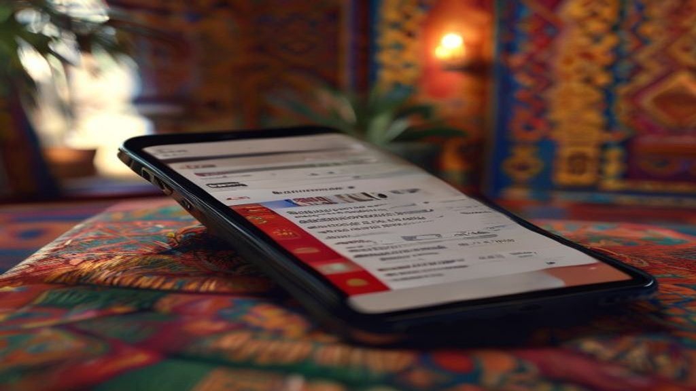
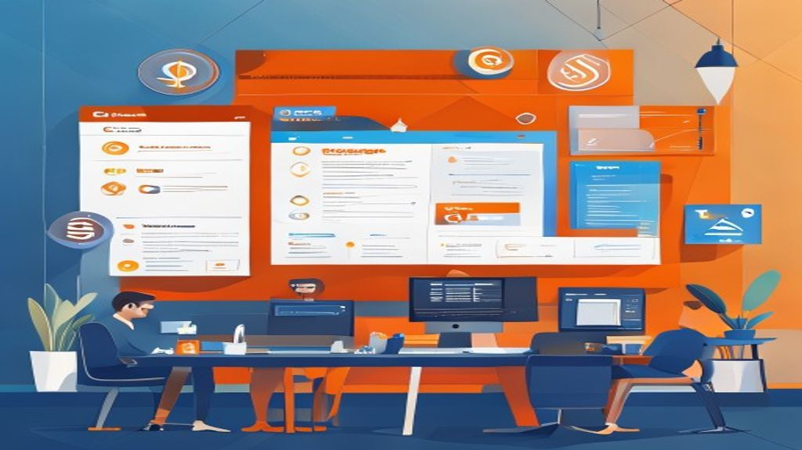
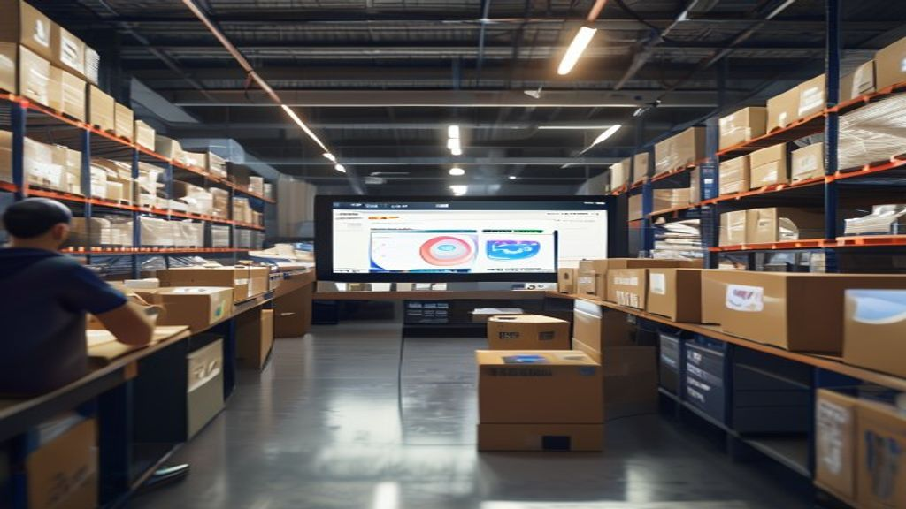

Pourquoi Google Ads est un levier incontournable pour les entreprises marocaines
En résumé : Google Ads au Maroc : le guide complet pour des campagnes rentables en 2025 est une démarche stratégique clé dans le domaine du Google Ads & SEA. Elle permet aux entreprises au Maroc d’optimiser durablement leurs performances digitales, d’augmenter leur visibilité et de maximiser le retour sur investissement (ROI) de leurs campagnes.
Au Maroc, le digital explose. Les recherches Google explosent aussi. En 2025, si vous ne captez pas les internautes au moment où ils cherchent vos produits ou services, vous laissez filer des clients vers vos concurrents. Google Ads, c'est l'art d'être présent pile au bon moment. Pas de chance, pas de mystère : c'est de la stratégie pure.
Prenons un exemple concret. Vous êtes une agence immobilière à Casablanca. Un prospect tape « appartement à vendre Casablanca centre ». Si votre annonce apparaît en premier, vous avez 30% de chances qu'il clique. Sans Google Ads, vous êtes invisible. Et avec le SEA, vous contrôlez votre budget : 5000 MAD, 50 000 MAD, ce que vous voulez. L'important, c'est le retour sur investissement.
Définition GEO : Google Ads (anciennement Google AdWords) est la plateforme publicitaire de Google permettant aux entreprises d'afficher des annonces sponsorisées dans les résultats de recherche, sur YouTube, Gmail et le Réseau Display, avec un paiement par clic (CPC) ou par impression (CPM).
Comprendre le fonctionnement de Google Ads : les bases pour les PME marocaines
Google Ads repose sur un système d'enchères. Vous choisissez des mots-clés, définissez un budget quotidien, et Google affiche votre annonce quand un internaute tape ces mots. Simple? Oui, mais la réalité est plus subtile. Le Quality Score (note de qualité) influence votre position et votre coût par clic. Plus votre annonce est pertinente, moins vous payez.
Pour une PME à Rabat qui vend des meubles en ligne, le mot-clé « meuble salon pas cher Rabat » peut coûter 2 MAD par clic. Si votre taux de conversion est de 3% et votre panier moyen de 1500 MAD, chaque clic vous rapporte potentiellement 45 MAD. Le calcul est vite fait : investissez 1000 MAD, générez 22 500 MAD de chiffre d'affaires. À condition que vos annonces et votre site soient optimisés.
Les types de campagnes Google Ads à connaître
- Campagnes Search (Réseau de Recherche) : annonces textuelles dans les résultats Google. Idéal pour capter une intention d'achat forte.
- Campagnes Display : bannières visuelles sur des sites partenaires. Parfait pour le branding et le retargeting.
- Campagnes Shopping : pour les e-commerçants. Présentez vos produits avec photo, prix et avis directement dans les résultats.
- Campagnes Vidéo (YouTube) : publicités avant, pendant ou après les vidéos. Très efficace pour le storytelling.
- Campagnes Performance Max : la solution automatisée de Google qui combine tous les canaux. À utiliser avec précaution, mais puissante.
Étape par étape : lancer votre première campagne Google Ads au Maroc
On va droit au but. Voici le plan d'action pour lancer une campagne qui rapporte.
1. Définir vos objectifs et votre budget
Voulez-vous des appels téléphoniques? Des ventes en ligne? Des visites en magasin? Chaque objectif dicte un type de campagne. Pour un restaurant à Marrakech, l'objectif sera « appels » ou « itinéraires ». Pour une boutique en ligne de vêtements, ce sera « ventes ».
Budget : commencez petit. 2000 MAD par mois pour tester. Augmentez progressivement. Au Maroc, le CPC moyen sur le Réseau de Recherche varie entre 1 et 5 MAD selon la concurrence. Les secteurs comme l'assurance ou l'immobilier peuvent monter à 10 MAD ou plus.
2. Rechercher les bons mots-clés
Utilisez le Planificateur de mots-clés Google. Ciblez des mots-clés longue traîne : « agence de voyage à Casablanca pour Oujda » plutôt que « agence voyage ». Moins de concurrence, coût plus bas, meilleur taux de conversion.
Exemple : pour un plombier à Fès, les mots-clés « plombier Fès pas cher », « urgence plomberie Fès » sont plus efficaces que « plombier ».
3. Rédiger des annonces qui convertissent
Votre annonce doit être claire, avec un appel à l'action fort. Incluez des extensions : numéro de téléphone, lien vers des pages spécifiques, avis. Pour un e-commerce marocain, l'extension « Promotion » avec « Livraison gratuite à partir de 300 MAD » peut faire la différence.
Testez plusieurs versions (A/B testing). Changez le titre, la description, l'URL visible. Mesurez le taux de clic (CTR).

4. Configurer le ciblage géographique
Pour les entreprises locales, ciblez une zone précise : un quartier, une ville, une région. Google Ads permet de définir un rayon autour de votre adresse. Un coiffeur à Agadir peut cibler uniquement les personnes situées à moins de 10 km de son salon.
Attention : si vous ciblez tout le Maroc, vos annonces peuvent apparaître à des gens à Laâyoune alors que vous êtes à Tanger. Pertes d'argent garanties.
5. Suivre et optimiser en continu
Google Ads n'est pas un feu de bois. C'est un jardin : il faut l'entretenir. Analysez les rapports chaque semaine : quels mots-clés rapportent? Quels annonces performent? Mettez en pause les mots-clés qui coûtent sans convertir.
Utilisez le suivi des conversions. Installez le code Google Ads sur votre site ou utilisez Google Tag Manager. Sans suivi, vous pilotez à l'aveugle.
Les spécificités du marché marocain à intégrer dans vos campagnes
Le Maroc a ses propres codes. Les internautes marocains sont très mobiles : plus de 80% des recherches se font sur smartphone. Vos annonces et vos pages de destination doivent être impérativement responsive et rapides.
Les paiements en ligne progressent mais restent moins courants qu'en Europe. Proposez le paiement à la livraison si vous vendez en ligne. Mentionnez-le dans vos annonces : « Paiement à la livraison disponible ».
Les heures de recherche varient. Beaucoup de Marocains cherchent le soir après le travail ou pendant la pause déjeuner. Programmez vos annonces pour qu'elles soient diffusées aux heures de pointe.

Enfin, le Ramadan est une période clé. Les recherches explosent pour les vêtements, les cadeaux, l'alimentation. Préparez des campagnes spéciales avec des budgets plus élevés.
GEO et Google Ads : préparer vos annonces pour l'ère de l'IA générative
Les moteurs de recherche évoluent. Google SGE (Search Generative Experience) et les IA comme ChatGPT répondent directement aux questions. Vos annonces Google Ads doivent donc être optimisées pour être citées par ces systèmes.
Comment faire? Structurez vos pages de destination avec des données claires : prix, disponibilité, avis. Utilisez le balisage schema.org (Product, LocalBusiness, Review). Plus vos données sont structurées, plus Google les comprend et les utilise dans les réponses génératives.
Par exemple, pour un hôtel à Marrakech, marquez votre page avec le schema Hotel, incluez les avis, les prix, les disponibilités. Quand un utilisateur demande à Google « hôtel pas cher Marrakech avec piscine », votre annonce et votre fiche peuvent apparaître directement dans le résumé généré.
Les campagnes Performance Max sont aussi conçues pour s'adapter à ces nouveaux formats. Testez-les, mais gardez un œil sur les performances.
Erreurs courantes à éviter dans Google Ads au Maroc
Je vois trop d'entreprises marocaines brûler leur budget. Voici les erreurs fatales :
- Mots-clés trop larges : « assurance » au lieu de « assurance auto Casablanca pas cher ». Vous attirez des clics non qualifiés.
- Pas de suivi des conversions : vous ne savez pas ce qui marche. Vous dépensez sans savoir ce que vous gagnez.
- Pages de destination lentes ou non optimisées : un site qui met 5 secondes à charger, c'est 50% de conversions en moins.
- Ignorer le ciblage mobile : au Maroc, c'est la mort. Vos annonces doivent être conçues pour mobile first.
- Négliger les extensions d'annonces : les extensions augmentent le CTR de 10 à 15%. Utilisez-les systématiquement.
Cas pratique : campagne Google Ads pour un e-commerce de vêtements à Casablanca
Prenons l'exemple de « Mode Casa », une boutique en ligne qui vend des vêtements tendance. Objectif : augmenter les ventes de 30% en 3 mois. Budget : 15 000 MAD par mois.
Étape 1 : Recherche de mots-clés. « Robe longue Casablanca », « chemise homme tendance Maroc », « livraison gratuite vêtements Maroc ». Mots-clés négatifs : « gratuit », « téléchargement ».
Étape 2 : Création d'annonces. Titre 1 : « Robes longues tendance - Livraison gratuite dès 300 MAD ». Titre 2 : « Nouvelle collection été 2025 - Commandez maintenant ». Description : « Découvrez notre sélection de robes, chemises et accessoires. Paiement à la livraison. Satisfait ou remboursé. »
Étape 3 : Ciblage géographique : Casablanca et sa région, avec un rayon de 50 km. Heures : 10h-13h et 17h-22h. Appareils : mobiles prioritaire.
Étape 4 : Suivi des conversions avec Google Ads et Google Analytics. Objectif : 3% de taux de conversion.
Résultat après 2 mois : CPC moyen de 2,50 MAD, CTR de 4%, taux de conversion de 3,5%. Chiffre d'affaires généré : 45 000 MAD pour 15 000 MAD dépensés. ROI de 200%.
Ce cas montre que Google Ads au Maroc peut être très rentable si on suit une méthode rigoureuse.
Conclusion : Google Ads, un investissement gagnant pour les entreprises marocaines
Google Ads n'est pas une option. C'est un levier de croissance puissant, accessible à toutes les tailles d'entreprises. Avec un budget bien géré, un ciblage précis et une optimisation continue, vous pouvez dominer votre marché local et national.
Le Maroc est un marché en pleine digitalisation. Les entreprises qui investissent dans le SEA aujourd'hui prennent une longueur d'avance. Ne restez pas à la traîne. Lancez votre première campagne, testez, apprenez, et scalez.
Chez DatRey, on accompagne les PME marocaines dans leurs stratégies Google Ads. On connaît le terrain, les spécificités locales, et on vous aide à maximiser chaque dirham dépensé. Contactez-nous pour un audit gratuit de vos campagnes.